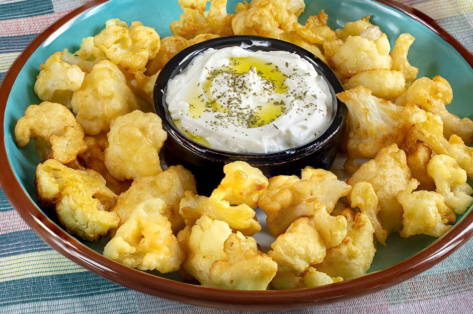

Karnabahar Yemeği Tarifi İçin Malzemeler

~Tarifin Hikayesi~
4-6 Kişilik 20dk Hazırlık, 10dk Pişirme
Karnabahar turşusu, karnabahar yemeği derken karnabahar kızartmasını denemeye fırsatınız oldu mu bilmiyorum. Ama fırsat bulup deneyememişseniz yada tarifini bilmiyorsanız şimdi tam zamanı. Karnabaharın şirin mi şirin çiçeklerinin ne kadar lezzetli olduğunu bilmeyen yoktur. İşte karnabahar kızartması da çok fazla lezzetlidir. Üzerine birde yoğurt döktüğünüzde keyiften dört köşe olabilirsiniz.Yapımı kolay karnabahar kızartmasının lezzetini sizlerde denediğinizde çok seveceksiniz. O zaman gelsin karnabahar kızartmaları. Deneyeceklere şimdiden afiyet olsun.
Karnabahar Yemeği İçin Malzemeler
- 1 adet orta boy karnabahar
- Su
- Tuz
Sosu için;
- 2 adet yumurta
- 1 su bardağı un
- 1 su bardağı süt
- 1 çay kaşığı tuz
Kızartma için
- Sıvı yağ
Üzeri İçin
- Sarımsaklı ya da sade yoğurt
Karnabahar Kızartması Tarifi Nasıl Yapılır?
- Sert olan kısımları kesilmiş ve çiçekleri ayıklanmış olan karnabaharları bir tencereye koyarak üzerini geçecek şekilde su ve tuz ekleyip haşlayın. Çok fazla yumuşamasına ve dağılmasına izin verilmeden suyu süzülmelidir.
- Başka bir kapta yumurta, süt çırpalım. Üzerine un ve tuzu ekleyerek tekrar çırpalım.
- Haşlanmış olan karnabaharları hazırladığımız karışıma teker teker bulayarak kızgın yağda her tarafını çevirerek kızartalım. Karnabaharlarınızı orta ateşte kızartmanız yeterli olacaktır.
- Dilerseniz peçete yardımı ile fazla yağını aldıktan sonra servis tabağına alınız.
- Üzerinde sarımsaklı yoğurt ya da sadece yoğurt ile servis edebilirsiniz. Afiyet olsun.
Karnabahar kızartması yanına ne gider?
- Karnabahar kızartması yanına yapacağınız ilk seçeneklerden bir tanesi makarnadır.
- Çok ağır olmasını istemiyorsanız üzerine tercihinize bağlı olarak sarımsaklı yada sarımsaksız yoğurtta yapabilirsiniz.
Karnabahar kızartma kalori
- Orta büyüklükte 1 porsiyon karnabahar kızartması yaklaşık olarak 101 kaloriye denk gelmektedir.
Afiyet olsun 😍.